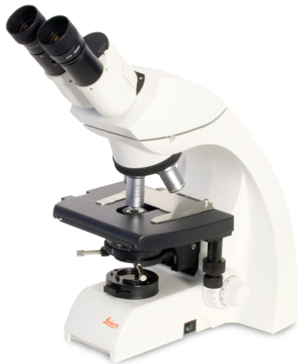

Artificial Inteligence in Biomedicine Group (ArBio)
We have specialized equipment for the development of projects on medical imaging
(Rx, CT, MRI, PET), neuroimaging (MRI, DTI, fMRI) and photomicrography.

Specialized equipment
Microscopio Leica DM750. User manual
Software Leica Aplication Suite. Download
Microscopios digital USB.
Cámara Nikon D7500 Reflex.
Cámara Go Pro Hero4.
Cámara Go Pro Hero8.
Cámaras RealSense.
Tableta para anotaciones Wacom.
Impresora 3D (Micro-escala) Ender 6 con controlador de movimiento TMC-2208.
Impresora 3D (Micro-escala) Ender 6 con controlador de movimiento TMC-2208.
CPU de Alto rendimiento, Intel Core i9 10850 KA 64 GB DDR4 SSD 512 GB DD4TB.
Procesador AMD® Ryzen® 9 3950X 3.5 GHz 16 Núcleos 64MB Cache 128GB RAM DIMM DDR4 3200Mhz Non- ECC (4x32GB)
Unidad Interna SSD M.2 1TB 2280 PCI-E 3.0 (NVMe) para SO
2x Disco 6TB SATAIII 6Gbit/s 7200RPM 256MB Cache Total 12TB.
General equipment
Monitor DELL 27” Giratorio.
Equipo cómputo optiplex.
Monitores LG 27”.
Laptop.
Equipos de cómputo de escritorio.
Impresora color.
Hecho en México, IIMAS-UNAM. Todos los derechos reservados 2024.
Esta página puede ser reproducida con fines no lucrativos, siempre y cuando no se mutile,
Follow us